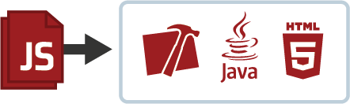

Who am I ?
- Front-end developer
- Work at Ziliko (next door!) with Backbone Boilerplate, grunt.js, less...
- Mobile freelance (Sencha Touch 2, Titanium, PhoneGap) for 2 years
- Migrii cofounder
What will I present today ?
Appcelerator Inc
Appcelerator Titanium SDK
Small app live coding
Appcelerator Cloud Services
Appcelerator Inc
- Founded in 2006, based in Mountain View, CA
- ~140 employees
- Private held startup, venture-backed
- Mixed business model between premium support and cloud services
- Bought Aptana to create Titanium Studio in 2011
- Codestrong event, every year
- 350,000 developers, 50,000 apps launched
Appcelerator Titanium SDK

- Simple idea : same code, multiple platforms
- Code most people master : web development
- Currently supports iOS, Android, Blackberry, and W8/WP8 in early 2013
- Desktop version exists, TiDesk
How does Titanium really work ?
- You write JavaScript code
- Titanium API takes your JS code and links it with native functions
- At build time, Titanium API packages only what you need
- At runtime, your code is evaluated and native functions are called
Why it's so great ?
- Really fast to get started, on multiple platforms
- Native user experience, native UIs
- Rich SDK with 2D/3D animations, APIs modules(Facebook, 4square, Twitter..)
- Performance over mobile web
- It's JavaScript
Why it's not so great ?
- You don't really have access to the real code
- Even if the SDK is rich, it's hard to get out from the framework
- Appcelerator maintains it - a company : some features needs a subscription
- It's JavaScript
Simple demo
Building a JS Montreal app
ACS and modules
A lot of modules available (free or paying)
From the developer website interface, you can add modules like Notifications, Users data storage, Photos, services...
So when can you use Titanium ?
- You want to write a simple (= non complex algorithms, graphics managements) app
- You don't want to learn a native language/framework
- Web mobile is good, but you want native feel for your users